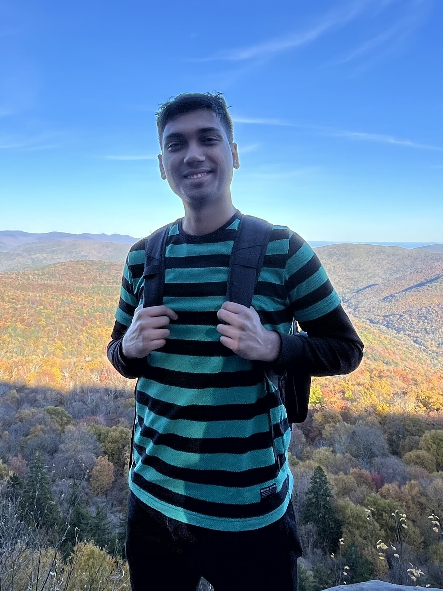
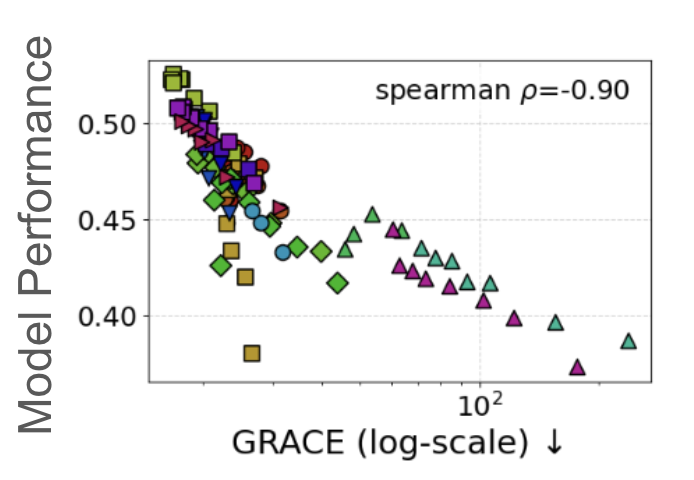
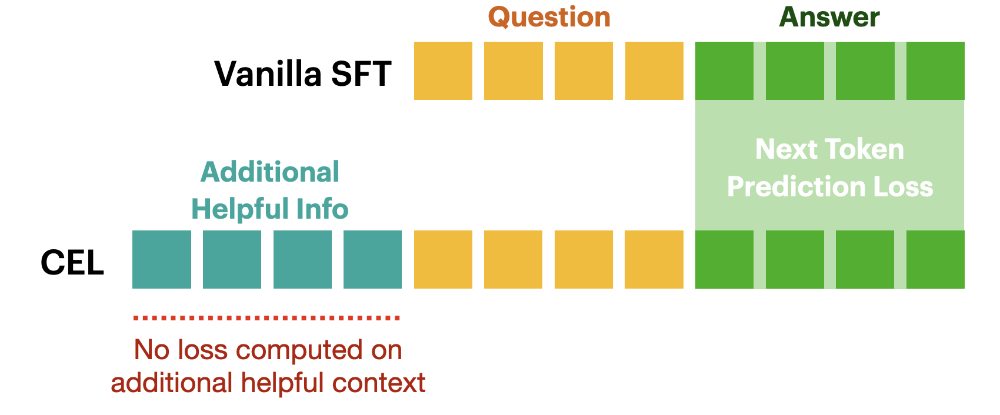
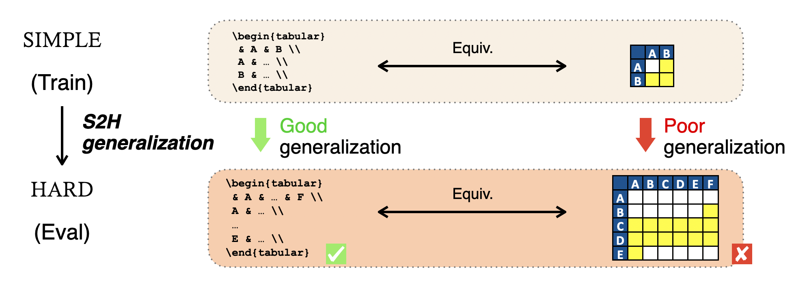
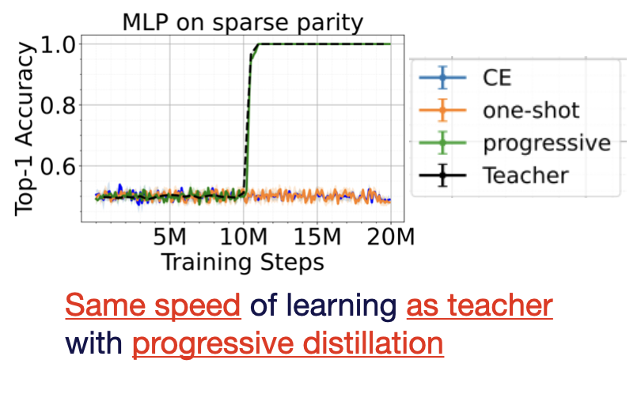

|
Abhishek Panigrahi
I am a fifth year graduate student in the Computer Science department at Princeton University, fortunate to be advised by Prof. Sanjeev Arora. Previously, I was a Research Fellow at Microsoft Research Lab - India where I worked with Dr. Harsha Vardhan Simhadri and Dr. Navin Goyal. Prior to the fellowship, I attended IIT Kharagpur where I obtained my B.Tech. in Computer Science and Engineering in 2018.
I am an Apple AI/ML Ph.D. scholar and a Siebel scholar for the academic year 2025-26.
Email /
CV /
Scholar /
I will be on the job market for 2026. Please reach out if you think my background and experience could be a good fit for your organization.
|

|
Research
My research aims to move beyond the paradigm of “more compute, better results” toward “targeted compute, stronger generalization.”
I study what makes language models truly adaptable to more difficult tasks beyond human supervision -- which I refer to as strong generalization.
My goal is to identify and optimize the components of the training pipeline that give rise to robust, adaptable reasoning in language models.
|

In Good GRACES: Principled Teacher Selection for Knowledge Distillation
Abhishek Panigrahi, Bingbin Liu, Sadhika Malladi, Sham Kakade, Surbhi Goel
In submission
STAT: Skill-Targeted Adaptive Training
Yinghui He*, Abhishek Panigrahi*, Yong Lin, Sanjeev Arora
In Submission
|

On the Power of Context-Enhanced Learning in LLMs
Xingyu Zhu*, Abhishek Panigrahi*, Sanjeev Arora
International Conference on Machine Learning (ICML 2025)
(Spotlight)
arXiv /
code

Generalizing from SIMPLE to HARD Visual Reasoning: Can We Mitigate Modality Imbalance in VLMs?
Simon Park*, Abhishek Panigrahi*, Catherine Cheng*, Dingli Yu, Anirudh Goyal, Sanjeev Arora
International Conference on Machine Learning (ICML 2025)
arXiv /
code

Progressive distillation induces an implicit curriculum
Abhishek Panigrahi*, Bingbin Liu*, Sadhika Malladi, Andrej Risteski, Surbhi Goel
International Conference on Learning Representations (ICLR 2025) (Oral)
Openreview
/
code
/
blog
Efficient stagewise pretraining via progressive subnetworks
Abhishek Panigrahi*, Nikunj Saunshi*, Kaifeng Lyu, Sobhan Miryoosefi, Sashank Reddi, Satyen Kale, Sanjiv Kumar
International Conference on Learning Representations (ICLR 2025)
Openreview
|
Task-specific skill localization in fine-tuned language models
Abhishek Panigrahi*, Nikunj Saunshi*, Haoyu Zhao, Sanjeev Arora
International Conference of Machine Learning (ICML 2023)
PMLR
/
code
|
Understanding Gradient Descent on the Edge of Stability in Deep Learning
Sanjeev Arora, Zhiyuan Li, Abhishek Panigrahi (alphabetical)
International Conference of Machine Learning (2022) (Spotlight)
PMLR
/
code
|
Other representative works
|
Trainable Transformer in Transformer
Abhishek Panigrahi*, Sadhika Malladi*, Mengzhou Xia, Sanjeev Arora
International Conference of Machine Learning (ICML 2024)
Openreview
/
Code
|
Do transformers parse while predicting the masked word?
Haoyu Zhao*, Abhishek Panigrahi*, Rong Ge, Sanjeev Arora
Empirical Methods in Natural Language Processing (EMNLP 2023)
Arxiv
|
Effect of Activation Functions on the Training of Overparametrized Neural Nets
Abhishek Panigrahi*, Abhishek Shetty*, Navin Goyal
International Conference on Learning Representations (ICLR 2020)
Openreview
|
Word2Sense: Sparse interpretable word embeddings
Abhishek Panigrahi, Harsha Vardhan Simhadri, Chiranjib Bhattacharyya
Association for Computational Linguistics (ACL 2019) (Oral)
ACL
/
code
|
|
{kind=link}